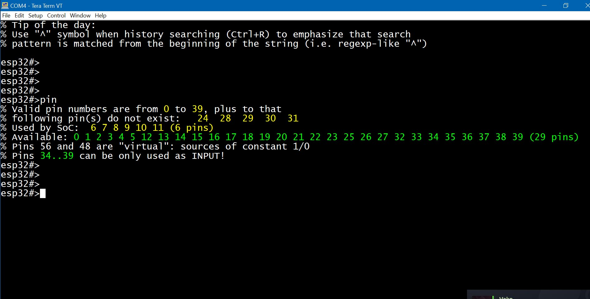

The ESP32 has many pins (or GPIOs - both terms are used interchangeably throughout this documentation) which can be configured as general-purpose input/output (GPIO) or assigned special functions. For example, a pin can act as a TX line for a hardware UART interface or serve as a CLOCK line for an I2C bus.
Some pins have system-level roles and are known as "bootstrapping" pins. These pins tell the bootloader how to initialize the hardware during startup. It's okay to use them, as long as doing so doesn't interfere with the boot process.
Some pins are reserved for internal use. For example, pins 6 - 11 on most generic ESP32 Dev boards are used to access internal flash memory. You can interact with these pins only if your program is already cached by the CPU, so no instruction cache misses occur.
Some pins are input-only and cannot be reconfigured to output mode.
In ESPShell, you can work with GPIOs using the "pin" command, which is used both for displaying information about a specific pin and for configuration. You can set a pin HIGH or LOW, send various pulse patterns, enable or disable PWM, configure pin direction and mode, and access IO_MUX & GPIO Matrix for advanced setups. All of this can be done manually, eliminating the need for fix/compile/upload/check cycles.
Unlike digitalRead(...), which doesn't work on pins used by hardware interfaces (for example,
you cannot use digitalRead() on I2C lines), ESPShell can read digital values on any GPIO.
It uses low-level access to pin states, so it's completely safe to read the value of a pin even if
it's actively running PWM. The command "pin NUM read" is used for this.
The "pin" command accepts multiple arguments, which are processed in order from left to right. The first argument is a pin number, and the remaining arguments are keywords and/or additional pin numbers to apply operations to. You can think of these arguments as a simple program that runs on the specified pin(s).
For example, "pin 2 save out high load" is a valid command with four arguments/keywords. This command saves the state of GPIO2 in an internal register, sets pin 2 to OUTPUT mode, drives it HIGH, and then immediately restores its state from the saved copy.
Examples of valid "pin" commands:
pin 1 high 2 low
pin 2 pwm 1000 0.5 delay 250 pwm 1000 0.25 delay 250 loop infinite
The "pin" command can operate on single or multiple pins at once. The example below shows a command that sets pins 2 and 4 to HIGH, while setting pins 18 and 19 to LOW:
esp32#>pin 2 high 4 high 18 low 19 lowHere, 2, 4, 18, and 19 are pin numbers, and "low" and "high" are keywords. Keywords can appear multiple times and in various combinations within a single "pin" command, as shown in the Examples section below.
To display informaton on an arbitrary pin: type "pin" followed by pin number and press <Enter>
Example below displays GPIO 0,8,1 and 4 basic information (ESP32 DevKit):
esp32#>pin 0 % GPIO0 is unused, strapping pin % Mode: INPUT, PULL_UP, % Output is disabled % Input is done via IO MUX, (function: GPIO0) % Maximum drive current is 20 mA % Digital pin value is HIGH (1) % esp32#>pin 8 % GPIO8 is in use % Mode: INPUT, OUTPUT, PULL_UP, % Output is done via GPIO Matrix, provides path for signal ID: 2 % Input is done via GPIO Matrix, connected signal IDs: 2, % Maximum drive current is 20 mA % Digital pin value is LOW (0) % esp32#>pin 1 % GPIO1 is in use, configured as UART_TX % Mode: INPUT, input is floating % Output is disabled % Input is done via IO MUX, (function: U0TXD) % Maximum drive current is 20 mA % Digital pin value is HIGH (1) % esp32#>pin 4 % GPIO4 is unused % Mode: INPUT, PULL_DOWN, % Output is disabled % Input is done via IO MUX, (function: GPIO4) % Maximum drive current is 20 mA % Digital pin value is LOW (0) % esp32#>
The related command "show pin NUM" is equivalent to "pin NUM" - both display information about pin number NUM. The only difference is that the "show pin" command accepts multiple arguments (pin numbers), so the example above can also be written as a single command: "show pin 0 8 1 4".
Note that some pins are reserved: these are used internally by the SoC. They might include pins for accessing flash memory or for controlling external PSRAM. Such pins will be shown as "is reserved".
How many pins are available on your particular ESP32 board? To find out which pins exist and which don't, you can use the "pin" command without arguments:

Fig. 1: Output of "pin" (on ESP32-WROOM32D Dev Module)
Command pin is used to set pin mode (e.g. PULL_UP/PULL_DOWN, INPUT/OUTPUT, OPEN_DRAIN) and value; equivalent of pinMode() and/or digitalRead()/digitalWrite()/analogRead()
| Keyword | Description and examples |
|---|---|
NUMBER | pin PIN_NUMBER
esp32#>pin 0 low 1 low 2 low
A command, which only contains numbers as its keywords (e.g. "pin 1 2 3") is a valid command which simply does nothing |
out | pin PIN_NUMBER out |
in | pin PIN_NUMBER in |
up | pin PIN_NUMBER up |
down | pin PIN_NUMBER down |
open | pin PIN_NUMBER open |
Note that the pin mode is not added to the existing pin configuration - it is overwritten.
For example, suppose we set pin 2 to OUTPUT with PULL_UP using the command "pin 2 out up".
If we later try to add the INPUT flag with "pin 2 in", pin 2 will end up with only the INPUT flag.
The correct way to apply multiple flags is to specify them all at once, e.g., "pin 2 in out up".
If the pin command includes any of the mode keywords mentioned above, the current pin mode
is first cleared (reset to zero), and then the new mode is applied.
| Keyword | Description and examples |
|---|---|
| read |
pin PIN_NUMBER read Performs a digital read. The command "
Pins configured as OUTPUT-only will be temporarily set to INPUT/OUTPUT automatically.
Unlike the standard
Example: read GPIO#1 values.
esp32#>pin 1 read
% GPIO1 : logic 1
esp32#>pin 1 read
% GPIO1 : logic 0
esp32#>
The example above shows that pin 1 returns "1", and shortly afterward "0".
This happens because, on the ESP32, GPIO1 is typically used as the UART_TX pin.
|
aread |
pin PIN_NUMBER aread Performs an analog read. This command configures a one-shot ADC (Analog-to-Digital Converter) on the specified pin and performs a measurement. It returns an absolute ADC value. Depending on the ADC attenuation setting, values range from 0 to 4095. |
low |
pin PIN_NUMBER low Writes logic "0" to the pin. |
high |
pin PIN_NUMBER high Writes logic "1" to the pin (i.e.,
Both
"pin 2 high"
"pin 2 out high"
|
toggle |
pin PIN_NUMBER toggle Inverts pin digital value: 0 becomes 1 and vice versa Example: toggle pin 2 at maximum speed:
esp32#>pin 2 toggle loop inf
|
The "pin" command can be used to generate PWM waveforms, precise high-resolution pulse sequences (with or without modulation, suitable for IR receivers), or even ultra-low-frequency signals and custom patterns.
| Keyword | Description and examples |
|---|---|
| sequence NUM |
pin PIN_NUMBER sequence SEQUENCE_ID Sends a preconfigured signal pattern. Patterns are created using the sequence command and are referenced by their ID number.
Example: Send sequence 5 over pin 2:
esp32#>pin 2 seq 5
|
| pwm FREQ DUTY |
pin PIN_NUMBER pwm FREQUENCY DUTY
Enables PWM output on the specified pin.
Example: Enable PWM at 5kHz with 50% duty cycle on pin 2:
esp32#>pin 2 pwm 5000 0.5
Note: although the pwm command does the same thing as " |
| delay NUM |
pin PIN_NUMBER delay MILLISECONDS Introduces a delay of NUM milliseconds before executing the next keyword in the "pin" command sequence. This can be used to create simple timed patterns:
Example: Blink an LED connected to pin 2 at 0.5Hz:
esp32#>pin 2 high delay 1000 low delay 1000 loop infinite &
The example above sets pin 2 HIGH for 1 second, then LOW for 1 second, and repeats the cycle. The symbol "&" makes the command run in the background. |
It is possible to temporarily save a pin's state (i.e. pin mode, value, and IOMUX function) and restore it later. An internal stack is used to store this information, but it is only one level deep - meaning any new save operation will overwrite the previous one. The keywords "save" and "load" are used to store and restore pin state. It is also possible to lock (freeze) a pin's output value, preventing any changes. However, once the pin is unfrozen, all changes made while it was frozen will be applied immediately, as if they had been delayed. The keywords "hold" and "release" are used for this.
| Keyword | Description and examples |
|---|---|
| hold release |
pin PIN_NUMBER hold | release Freezes the output value of a pin. A frozen pin will retain its value even after a software reboot, as long as power is supplied to the chip. However, rebooting via full power cycle (POWERUP) will unfreeze the pin.
Example: Freeze the value of pin 2:
esp32#>pin 2 hold
"pin X release" unfreezes a pin that was previously frozen using "pin X hold" and applies all changes made during the frozen period.
Example: Unfreeze pin 2:
esp32#>pin 2 release
|
| save load |
pin PIN_NUMBER save | load Saves the pin state to an internal register and restores it later using "load".
Example: Save pin state, perform analog read, then restore pin state:
esp32#>pin 2 save aread load
"pin X load" restores the previously saved state of the pin. The example above demonstrates how to use the "load" keyword. |
The "pin" command can be looped to repeat continuously until the loop count reaches zero. The loop keyword is used for this purpose and must be placed at the end of the command. Looped commands can be interrupted either by pressing a key (for commands running in the foreground) or by using the "kill" command to stop background looped commands.
| Keyword | Description and examples |
|---|---|
loop |
pin PIN_NUMBER ... loop COUNT| infinite
Repeats the entire command
esp32#>pin 2 delay 1000 loop inf & ← Background command, loops infinitely
esp32#>pin 2 delay 1000 loop 10 & ← Background command, loops 10 times
|
IO_MUX and GPIO_Matrix (with or without the underscore) are hardware components within the ESP32 chip. They are used to connect GPIO pins to peripheral hardware blocks inside the ESP32. Each pin can be configured for one of five (or six on some ESP32 variants) functions. A pin can act as a simple GPIO or perform a specialized function (e.g., UART TX). The "show iomux" command displays the current "pin-to-function" mappings:

Fig. 2: Output of show iomux command
From the sample output above, you can see that GPIO0 is assigned to Function 0 (Simple GPIO0). Changing it to Function 2 would not make a difference in behavior, because both refer to "simple GPIO"- Function 0 routes through IO_MUX, while Function 2 routes through GPIO_Matrix.
Pins 6 through 11, shown in red in Fig. 2, are used for accessing internal flash memory.
IO_MUX provides slightly faster performance than GPIO_Matrix. However, GPIO_Matrix offers more flexibility by allowing almost any peripheral to be connected to almost any pin. Using GPIO_Matrix for flash signals (instead of IO_MUX) introduces a small delay of about 25 ns.
If you look again at Fig. 2, you'll notice that pin 1 and pin 3 are set to function #0, which corresponds to UART0 TX and UART0 RX, respectively. Does this mean that only pins 1 and 3 can be used to configure UART0?
No, it doesn't.
UART0 can also be configured using the GPIO Matrix - and this is exactly what happens when you assign UART0 to pins other than 1 and 3. For example, if we want to initialize UART0 on pins 18 and 19, those pins will be switched to GPIO Matrix mode, which is indicated by selecting Function #2 (on the ESP32; other ESP models may use Function #1 for this). Once GPIO Matrix mode is selected, the pins are connected to the peripheral signals UART0_RX and UART0_TX. Signal routing (i.e., connecting or disconnecting signals) can also be done manually - see the "matrix" keyword below.
Again, Fig. 2 shows that if we want to initialize UART1 using its preferred pins (i.e., through IO_MUX, bypassing the GPIO Matrix), we must use GPIO9 and GPIO10. When these GPIOs are set to Function #4, they become UART1_RX and UART1_TX. Unfortunately, GPIO9 and GPIO10 are already used to interface with the flash memory chip.
What about UART2? If we initialize it on pins 16 and 17 with Function #4 selected, they become high-speed UART interface pins. Thus, pins 16 and 17 are the preferred pins for UART2. Let's create a UART2 interface and take another look at the IOMUX table:
esp32#>uart 2 esp32-uart2>up 16 17 115200 esp32-uart2>show iomux
Fig. 3: Output of the show iomux command after initializing UART2 on preferred pins
What happens if we initialize UART2 on pins 18 and 19? Let's find out:
esp32#>uart 2 esp32-uart2>up 18 19 115200 esp32-uart2>show iomux
Fig. 4: Output of the show iomux command after initializing UART2 on alternative pins
This time, the pins are set to Function #2, which corresponds to GPIO Matrix mode, resulting in a bit slower UART.
If you run show pin 18 19, you'll see that pins 18 and 19 are connected to the peripheral signals UART2_RX and UART2_TX:
esp32-uart2>sh pin 18 19 % GPIO18 is available, configured as UART_RX % Mode: INPUT, input is floating % Output is disabled % Input is done via GPIO Matrix, connected signal IDs: 198, % Maximum drive current is 20 mA % Digital pin value is LOW (0) % % GPIO19 is available, configured as UART_TX % Mode: INPUT, OUTPUT, input is floating % Output is done via GPIO Matrix, provides path for signal ID: 198 % Input is done via GPIO Matrix % Maximum drive current is 20 mA % Digital pin value is HIGH (1)
| Keyword | Description and examples |
|---|---|
| iomux [FUNC] |
pin PIN_NUMBER iomux [FUNC | Select IO_MUX function FUNC for the pin. Valid values are 0 - 5 (ESP32) or 0 - 4 (on other ESP32 models). Example: Select IO_MUX function #0 for pin 0: esp32#>pin 0 iomux 0 You can omit the function number when selecting function 0: esp32#>pin 0 iomux <---- equivalent to the command above Now display pin 0 configuration: esp32#>pin 0 % Pin 0 (GPIO0) is strapping pin, available, and is not used by Arduino Core % Mode: INPUT, OUTPUT, input is floating % Output is done via IO MUX, (function: GPIO0) < --- % Input is done via IO MUX, (function: GPIO0) < --- % Maximum current is 20 milliamps % Digital pin value is LOW (0) The lines marked "< ---" indicate the pin is now in fast IO_MUX mode. Now let's reconfigure pin 0 to use the GPIO_Matrix. On original ESP32 chips: esp32#>pin 0 iomux 2 On other ESP32 models (ESP32-S3, S2, P4, C3, C6, etc.), use function 1 instead: esp32#>pin 0 iomux 1 Check the pin configuration again: esp32#>pin 0 % Pin 0 (GPIO0) is strapping pin, available, and is not used by Arduino Core % Mode: INPUT, OUTPUT, input is floating % Output via GPIO matrix, simple GPIO output < --- routed through GPIO_Matrix % Input via GPIO matrix, simple GPIO input < --- routed through GPIO_Matrix % Maximum current is 20 milliamps % Digital pin value is LOW (0) NOTE: Although you can switch between IO_MUX and GPIO_Matrix for "simple GPIO" using the "pin ... iomux" command, it is recommended to use the dedicated "pin ... matrix" command when working with GPIO_Matrix. If the "gpio" keyword is used, the pin will be auto-configured using either IO_MUX or GPIO_Matrix. Internally, this uses the ESP-IDF APIs gpio_pin_reset() and gpio_pad_select_gpio(). |
| matrix |
pin PIN_NUMBER matrix [ gpio ] Use the "matrix" keyword to configure a pin to use GPIO_Matrix routing. Without additional arguments, the pin is treated as a simple GPIO via GPIO_Matrix, with input unchanged and output configured as "simple GPIO". Example: Configure pin 4 to use IO_MUX: esp32#>pin 4 iomux Example: Configure pin 4 to use GPIO_Matrix: esp32#>pin 4 matrix If additional parameters are supplied, the pin will be routed through the GPIO_Matrix and connected to a peripheral signal. Two parameters are required:
If the keyword "gpio" is used instead of a signal number, the pin will be set to "Simple GPIO via GPIO_Matrix", and any previously attached signals will be disconnected from the output. Let's work with pin 2, switching it to GPIO_Matrix and connecting some signals. First, check the current configuration: esp32#>pin 2 % Pin 2 (GPIO2) is available, and is not used by Arduino Core % Mode: OUTPUT, % Output is done via GPIO MATRIX, acts as simple GPIO output (SIG_GPIO_OUT_IDX) % Input is disabled % Maximum current is 20 milliamps % Digital pin value is LOW (0) Now set pin 2 as both input and output through GPIO_Matrix, using signal IDs 33 and 55: esp32#>pin 2 in out matrix in 33 matrix out 55 Check the updated configuration: esp32#>pin 2 % Pin 2 (GPIO2) is available, and is not used by Arduino Core % Mode: INPUT, OUTPUT, input is floating % Output is done via GPIO MATRIX, provides path for signal ID: 55 % Input is done via GPIO matrix, connected signal IDs: 33, % Maximum current is 20 milliamps % Digital pin value is HIGH (1) NOTE: You can connect multiple signals to a single input by repeating the "matrix in" keyword in a single command: pin 2 matrix in 33 matrix in 44 matrix out 55This connects signal IDs 33 and 44 to the pin's input. |
The "pin" command is an interpreter; it does not compile its keywords for faster execution. Instead, keywords are interpreted each time they are run, even within loops. So, how fast is it?
You can run a simple experiment: connect pins 2 and 4 with a jumper wire and execute the shell commands "pin 2 low high loop infinite &" and "count 4". The first command toggles pin 2 between high and low in a background loop, while the second command counts the pulses received on pin 4. On a classic ESP32 running at 240 MHz, this experiment shows a pulse rate of approximately 80 kHz. However, adding just a 1-millisecond delay significantly reduces the execution speed: the command "pin 2 low high delay 1 loop infinite &" results in a signal of only about 500 Hz.
Another factor that can affect the performance of the "pin" command is keyword length. ESPShell executes commands slightly faster if the arguments are shortened. For example, "pin 2 l h loo inf &" will run a bit faster than "pin 2 low high loop infinite &".
One more important detail: commands like "pin 2 low high loop inf &" can only be stopped using the "kill -9" command. This is because such commands do not contain any delays, and delays are the only points where the "kill" command (without "-9") can gracefully interrupt a task. To allow graceful termination, you can either add a 1 ms delay (which, as shown above, greatly reduces performance) or use "kill -9" to forcefully terminate the task.
Let's go through some simple examples demonstrating how to use the "pin" command. It's often easier to learn from examples than from reading endless tables and descriptions.
Example 1. Display GPIO4 information:
esp32#>pin 4
Example 2. Set pin 33 to OUTPUT and INPUT, enable PULL_UP, and set it HIGH:
esp32#>pin 33 out in up high
Example 3. Save the pin state, set it to OUTPUT and HIGH, then restore the original state:
esp32#>pin 33 save out high esp32#>pin 33 load
NOTE: Setting a pin to "low" or "high" implicitly sets it to OUTPUT mode. Internally, the "high" keyword expands to "out high". So, the above command can be simplified to:
esp32#>pin 33 save high esp32#>pin 33 load
Example 4. Read an analog value from pin 33:
esp32#>pin 33 aread
NOTE: The "aread" command uses the analogRead() function,
which reconfigures the pin as part of the reading process.
After running "pin 33 aread", the pin is reconfigured and may not respond to digitalRead() anymore.
To preserve the original configuration, use "save" and "load":
esp32#>pin 33 read save aread load
Arguments are processed from left to right. In this case, the pin is first read digitally, then its state is saved, followed by analog reading and state restoration.
Example 5. Save pin state, set it to OUTPUT and HIGH for 250 ms, LOW for 100 ms, HIGH again for 50 ms, then restore the original configuration:
esp32#>pin 33 save high delay 250 low delay 100 high delay 50 load
NOTE: Although simple signal patterns can be created using "delay", it is typically used for basic tasks like relay control.
For more complex signal sequences, consider using the Pulse Generator. See docs/Pulse_Generator.txt for more information.
NOTE: The "pin" command can be interrupted during long delays (>5 seconds) by pressing any key in your terminal or sending any character via the Arduino IDE Serial Monitor. Shorter delays cannot be interrupted-you'll need to wait until they finish.
Example 7. Set pin 2 HIGH, pin 3 LOW, wait 1 second, then invert the pin states:
esp32#>pin 2 high 3 low delay 1000 2 low 3 high
Example 8. Blink an LED on GPIO2 with a 500 ms delay, 20 times:
esp32#>pin 2 high delay 500 low delay 500 loop 20
NOTE: When the "loop" keyword is used, the "pin" command becomes interruptible: pressing any key in your terminal or Arduino IDE Serial Monitor will abort the command.
Example 9. Blink an LED on GPIO2 at 30% brightness:
To adjust brightness, use PWM with a frequency of 5 kHz and a 30% duty cycle:
esp32#>pin 2 pwm 5000 0.3 delay 500 pwm 0 0 delay 500 loop infinite
As seen in the examples above, some "pin" commands may take a long time to complete. Commands involving "loop" or large "delay" values can run for tens of seconds or even minutes. You can interrupt these at any time by pressing <Enter> in your terminal or Serial Monitor.
Example 10. Send an S.O.S. in Morse code, repeating infinitely:
(Morse code for SOS is ...---..., the command is split across two lines for readability.)
pin 2 h d 100 l d 100 h d 100 l d 100 h d 100 l d 300 h d 200 l d 100 h d 200
l d 100 h d 200 l d 300 h d 100 l d 100 h d 100 l d 100 h d 100 l d 500 loop inf
Example 11. Bridge GPIO2 to GPIO4 so that setting GPIO2 to logic 1 also sets GPIO4 to logic 1. GPIO2 drives GPIO4, but not the other way around:
esp32#>pin 2 matrix in 208 esp32#>pin 4 matrix out 208
Signal number 208 is one of the few user-defined signals not connected to any peripheral, making it ideal for GPIO-to-GPIO interconnections.
Example 12. Connect peripheral signal 77 to constant "1", and signal 78 to constant "0":
esp32#>pin 0x38 matrix in 77 esp32#>pin 0x30 matrix in 78
This example uses special virtual pins: 0x30 (constant 0) and 0x38 (constant 1). These can be used as sources in GPIO matrix routing for fixed logic levels.

Example 13. Monitor the analog signal on pin 36:
Use the "aread", "delay", and "loop" keywords to build a simple monitor:
esp32#>pin 36 aread delay 500 loop infinite
This command runs in the foreground and updates the analog value every 500 ms.